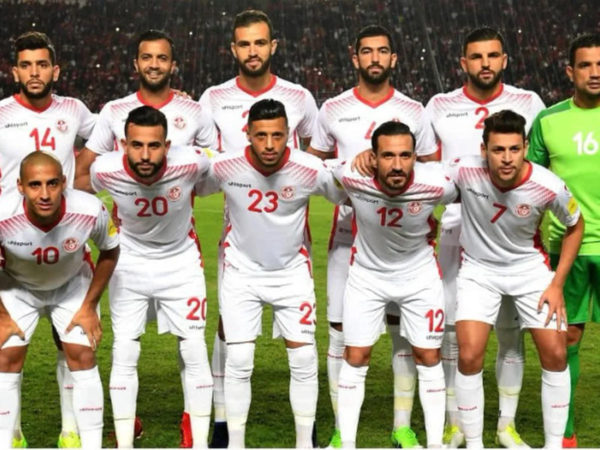

Ranking FIFA: 30° (octubre 2022).
¿Cómo se clasificó al Mundial? Venció en la llave decisiva a Malí por 1-0 en el resultado global.
Rendimiento en 2021 (G-E-P): 12-1-4 (29 GF, 13 GC, +16)
Rendimiento en 2022 (G-E-P): 7-2-4 (17 GF, 8 GC, +9)
Bechir Ben Said; Mohamed Drager, Dylan Bronn, Montassar Talbi, Ali Maaloul; Aïssa Laïdouni, Ellyes Skhiri, Mohamed Ben Romdhane; Wahbi Khazri, Seifeddine Jaziri, Youssef Msakni.
Nacionalidad: tunecino.
Edad: 50 años.
Contratado: 30 de enero de 2022.
Récord en el cargo (G-E-P): 5-2-1.
Títulos en el cargo: Ninguno.
Victoria más notable: 1-0 sobre Malí en la 3° Ronda de las Eliminatorias africanas.
1930 Uruguay -
1934 Italia -
1938 Francia -
1950 Brasil -
1954 Suiza -
1958 Suecia -
1962 Chile -
1966 Inglaterra -
1970 México -
1974 Alemania -
1978 Argentina 9°
1982 España -
1986 México -
1990 Italia -
1994 Estados Unidos -
1998 Francia 26°
2002 Corea y Japón 29°
2006 Alemania 24°
2010 Sudáfrica -
2014 Brasil -
2018 Rusia 24°
